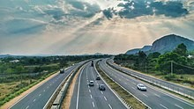

Transport:-
Transport in Bangalore consists of several intracity commute modes such as BMTC buses,
Namma Metro rail services, taxis and auto rickshaws, as well as several intercity forms of transport: Government operated KSRTC, NWKRTC, KKRTC,
other states RTC buses, Private bus operators, trains, and flights.Karnataka, a state in South India has a well-developed transport system. Its capital city,
Bengaluru is well-connected by air to domestic and international .
1.Air
Bangalore is served by
Kempegowda International Airport, located at Devanahalli, about 40 km (25 mi) from the city centre.
Formerly Bangalore International Airport, the airport started operations from 24 May 2008 and is privately managed by a consortium led by the GVK Group.
The city was earlier served by the
HAL Airport at Vimanapura, a residential locality in the eastern part of the city.The airport is the third-busiest
inIndia after Delhi and Mumbai in terms of passenger and airplane traffic.Taxis and air-conditioned Volvo buses operated by BMTC connect the airport with the city.
Railways and Metro
As of 2022, a rapid transit system called the
Namma Metro is being built in stages. Initially opened with the 7 km (4.3 mi) stretch from Baiyappanahalli to MG Road in 2011,roads totaling 42.30 km (26.28 mi) for the north–south and east–west lines were made operational in June 2017.Phase 2 of the metro covering 72.1 km (44.8 mi) is under construction
There are also plans to extend the north–the South Western Railway zone of the Indian Railways. There are four major railway stations in the city: Krantiveera Sangolli Rayanna Railway Station; Bangalore Cantonment railway station; Yeshwantapur Junction
BUS
Buses operated by Bangalore
BMTC are a staple of city public transport. While commuters can buy tickets on boarding these buses,
BMTC also provides an option of a bus pass to frequent users.BMTC runs air-conditioned luxury buses on major routes and operates shuttle services from various parts of the city
The
KSRTC headquartered in Bangalore, along with sister corporations NWKRTC and KKRTC runs intercity buses from the city to various parts of Karnataka as well as neighbouring states.
BUS

Bangalore is well-connected with
National highways with the rest of the country. The highways are National Highway 44 (NH-44), National Highway 48 (NH-48)
also Asian Highway 47 (AH-47), National Highway 275 (NH-275), National Highway 75 (NH-75), National Highway 648 (NH-648) and National Highway 948 (NH-948), along with state highways. An average of 1,750 vehicles are registered
daily in Bangalore Regional Transport Offices (RTOs).[215] The total number of vehicles, as of 2020, are around 8,500,000 vehicles, and the city's roads total 11,000 km (6,835 mi)